01钩子 / 问题
直接进入动画对话
视频没有先解释工具，而是从多人讨论利益分配和计划的英语对话开始。它证明角色能连续说话，却没有告诉中文观众表演素材如何进入系统。
Runway Act One 能把表演迁移到动画角色，但这条视频几乎只放结果，没有把工具、输入和步骤讲给中文观众。
视频主体是一段英语黑帮饭局式动画对话，观众看到的是成片而不是教程。官方字幕也主要记录角色台词；真正的工具说明只存在于标题和简介。
Runway Act One 能把表演迁移到动画角色，但这条视频几乎只放结果，没有把工具、输入和步骤讲给中文观众。
不是复述内容，而是标出每一段承担的叙事任务、观众问题和画面证据。
视频没有先解释工具，而是从多人讨论利益分配和计划的英语对话开始。它证明角色能连续说话，却没有告诉中文观众表演素材如何进入系统。
中段围绕葬礼、帮派战争和最后晚餐等台词展开。价值主要体现在角色表情、口型和多人场景的持续性。
后段继续讨论价格、协同和菜单，作为一段动画情境是完整的；但工具名、上传步骤、生成耗时和失败边界都没有在视频内出现。
下列章节覆盖视频的主要论点、步骤与结果；每段都保留时间码和关键画面。
视频没有先解释工具，而是从多人讨论利益分配和计划的英语对话开始。它证明角色能连续说话，却没有告诉中文观众表演素材如何进入系统。
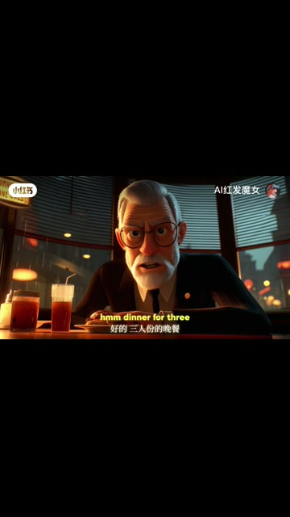
中段围绕葬礼、帮派战争和最后晚餐等台词展开。价值主要体现在角色表情、口型和多人场景的持续性。
后段继续讨论价格、协同和菜单，作为一段动画情境是完整的；但工具名、上传步骤、生成耗时和失败边界都没有在视频内出现。
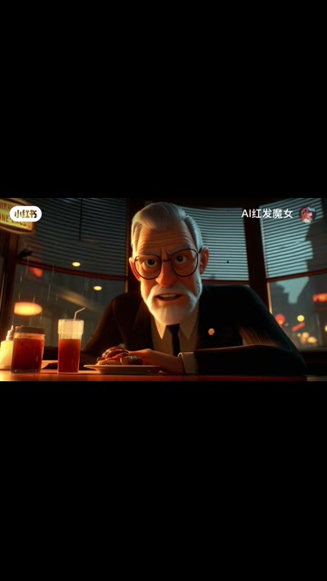
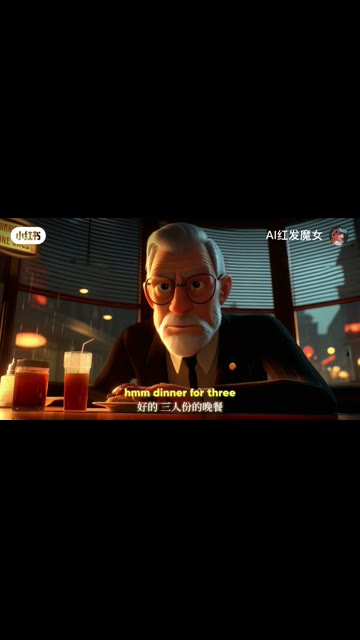
短视频每 1 秒、常规视频每 2 秒、超长视频每 3 秒取一帧。
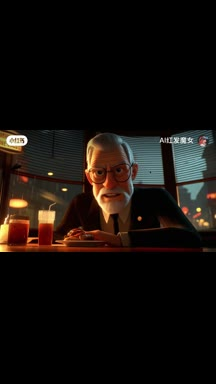
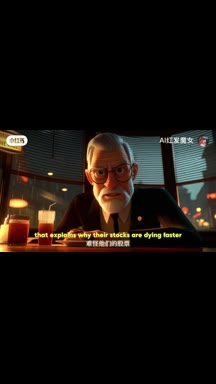
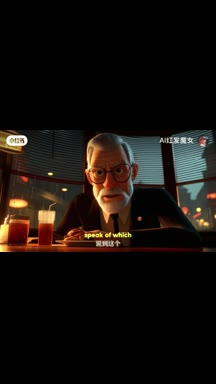
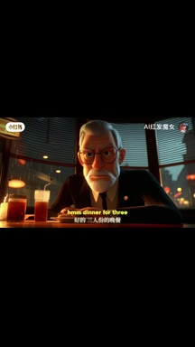
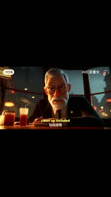
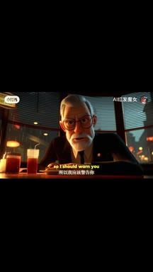
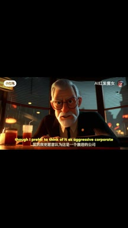
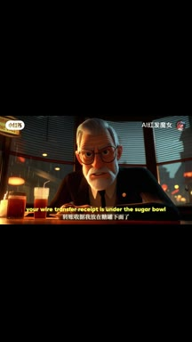
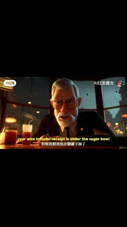
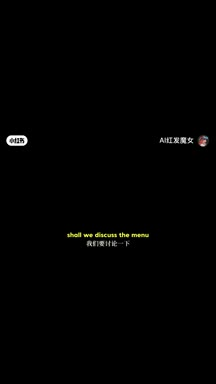
小红书官方 zh-CN 字幕 · 12 段 · 179 字。字幕只记录声音；工具名、界面文字和结果含义必须结合上方视觉知识地图复核。
相当混乱，三家在争夺分配
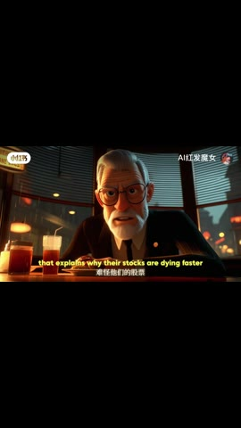
这解释了为什么他们卡住了，所以潜水速度更快
比我的丈夫所说的有多少安排
你想为他们的葬礼做些什么，让它看起来像一场帮派战争
就像他们的最后晚餐变成了现实
前三顿的最后一顿包括清理
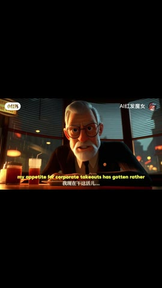
所以我应该警告你，我对公司外卖的胃口已经变大了
相当贵，钱不是问题，只要确保它优雅
高价
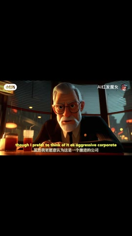
我更愿意将其视为积极的协同缩减
你的电汇收据在糖碗下面
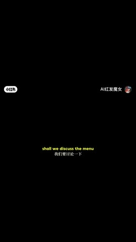
沙维特讨论了下周维也纳的菜单
官方字幕是动画中的英语对白，并非中文教程口播。点赞少可能与内容入口和语言错位有关，但没有曝光量与留存数据，不能断言平台为何减少分发。
打开小红书原帖 ↗